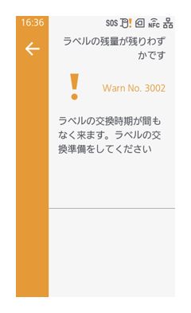
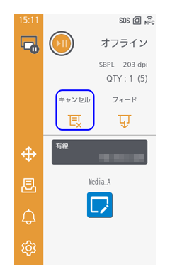

ホーム画面の表示と操作
本製品の電源が入っている状態で ボタンを押すと、ホーム画面に切替えられます。
ボタンを押すと、ホーム画面に切替えられます。
ホーム画面は、本製品がオンライン状態かオフライン状態かによって表示される画面が異なります。
- オンライン／オフライン切替
- 現在のプリンタ言語
- 本製品の解像度
- 処理中の印字ジョブの発行枚数
設定メニューの［システム］ > ［総発行枚数表示］が有効の場合、電源投入後からの総発行枚数が括弧内に表示されます。 - 再発行
直前のデータを再度印字できます。
設定メニューの［印字］ > ［詳細設定］ > ［再発行］が有効の場合に表示されます。 - キャンセル
印字をキャンセルします。印字ジョブがないときは無効です。 - フィード
用紙を送ります。 - ウィジェット
設定メニューの［システム］ > ［ホーム画面］で作成したウィジェットが表示されます。
詳しくは、ウィジェットの表示を参照してください。 - メディアプロファイル
設定メニューの［印字］ > ［メディアプロファイル］で作成したメディアプロファイル（用紙種類と印字設定の組み合わせ）が表示されます。タップすると、本製品にメディアプロファイルの設定を適用できます。
詳しくは、メディアプロファイルの設定を参照してください。 - メニューバー
メニューバー
◆cap_home_menu

- アプリコントロール
- アイテム移動／削除
- ジョブコントロール
- お知らせ
- 設定メニュー
(1) アプリコントロール
起動中のアプリが一覧で表示されます。
◆cap_appcontrol
アプリをタップすると、そのアプリへ切替えることができます。
<iln_app_close>をタップすると、アプリが終了します。
(2) アイテム移動／削除
ホーム画面上のアプリ、ウィジェット、およびメディアプロファイルを移動または削除します。
移動または削除したいホーム画面上のアイテムをタップし、選択状態にします。
またはをタップすると、アイテムを上下に移動できます。をタップすると変更内容が保存されます。
をタップすると、アイテムが削除されます。
(3) ジョブコントロール
ジョブの情報の確認や削除、印字の再実行がおこなえます。
［ジョブ］タブには、印字待機中のデータが一覧で表示されます。
［履歴］タブには、印字済みのデータが一覧で表示されます。
をタップすると、表示されているすべての印字データを削除できます。
各ジョブをタップすると、操作メニューが表示されます。
- ［詳細］：ジョブの詳細情報が表示されます。
- ［印字］：印字済みのデータを再印字できます。（［履歴］タブのみに表示されます。）
- ［プレビュー］：印字のプレビューが表示されます。
- ［削除］：ジョブを削除します。
(4) お知らせ
清掃時期や消耗部品の交換時期の通知や本製品の状態に関するお知らせが表示されます。
各お知らせをタップすると、詳細情報が表示されます。

操作ボタンが表示されます。
設定項目の表示、本製品の再起動、ヘルプ動画の再生、QRコードの表示、カットの実行、印字のキャンセル、カウントクリアなどができます。
お知らせの内容によって実行できる操作は異なります。
本製品を操作中に新たなお知らせが発生した場合は、画面の上部に通知バナーが表示されます。
通知バナーをタップすると、お知らせの詳細内容を確認できます。
(5) 設定メニュー
設定メニューを表示します。
詳しくは、設定章を参照してください。
オンライン状態とオフライン状態
オンライン状態
印字を実行できる状態です。
オフライン状態
印字を停止している状態です。
- 印字中に印字設定の調整する場合
印字中に ボタンを押し、印字が停止した状態でをタップします。
ボタンを押し、印字が停止した状態でをタップします。項目を選択し、設定を調整します。
印字を再開するには、再度
ボタンを押します。 印字中にキャンセルする場合
印字中に
ボタンを押し、印字が停止した状態で［キャンセル］をタップします。
［現在のデータ］または［すべて］を選択します。